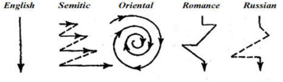

Paragraphs
At all levels of mastery of the language, except, perhaps, the
very lowest, teachers are often concerned to train their learners in
how to write an acceptable, cohesive and persuasive paragraph.
This is what this guide concerns.
 |
Definition |
Originally, the word paragraph referred to
the mark which sets off a section of a text from other parts of it
and only later did the word come to refer to the section of the text
itself.
Nowadays, we might define a paragraph as:
a distinct part of a text relating to a particular point
and there are two things to notice in that definition:
- A paragraph is a distinct part.
These days, the identification of a paragraph is generally achieved in one of two ways (which are often combined):- by indenting the first line only
- by inserting a wider space between the section and the rest of the text than is normal between lines of the text
- A paragraph relates to a particular point.
To serve its purpose well, in English, a paragraph is concerned to address one point among many and all its components, in English at least, should be relevant to that point and no other.
Kaplan, whom we shall meet again, includes the following citation in a paper on paragraph organisation across cultures:
Paragraph divisions signal to the reader that
the material so set off constitutes a unit of thought. For the
reader this marking off of the whole composition into segments is a
convenience, though not a strict necessity. ... Since communication
of one's thought is at best a difficult business, it is the part of
common sense (not to mention good manners) to mark for the reader
the divisions of one's thought and thus make the thought structure
visible upon the page. ...
Paragraphing, obviously, can be of help to the reader only if the
indicated paragraphs are genuine units of thought. ... For a
paragraph undertakes to discuss one topic or one aspect of a topic.
(Kaplan, 1966:13)
The key point being that paragraphs must, in English, represent genuine units of thought.
Examples and some notes |
Here's a typical paragraph taken from an encyclopedia and intended as part of an information report:
The earliest examples of a conventional use of
written symbols are on clay tablets discovered in various parts of
the Middle East and south-east Europe from around 3500 B.C.
Large numbers of tablets made by the Sumerians have been found in
sites around the Rivers Tigris and Euphrates in present-day Iraq and
Iran. For example, on tablets from the city state of Uruk,
about 1500 symbols have been listed, most of them abstract in
character. They seem to have recorded such matters as land
sales, business transactions, and tax accounts.
(Crystal, 1987:196)
and here are some notes concerning what makes this paragraph a good example of its kind:
- It has a clear topic sentence which comes first in the
paragraph and directs the reader to what is to follow. We
instantly know that this paragraph will concern
The earliest examples of a conventional use of written symbols
and, very importantly, nothing else.
That phrase constitutes the subject of the verb are and is connected to a complex prepositional phrase (on clay tablets discovered in various parts of the Middle East and south-east Europe from around 3500 B.C.) post-modifying the noun phrase, clay tablets. It is the theme of the first sentence and the theme, indeed, of the whole paragraph. - The rheme of the first sentence has been set up as clay tablets and this rheme forms the theme of the next sentence, Large numbers of tablets made by the Sumerians, being raised to the patient position of a passive voice clause with the verb phrase have been found.
- The final two sentences continue this pattern of theme and rheme structures with the tablets, or a pronoun referring to them, as the subjects (in this case, topical themes) of both sentences.
- The sequence of information in the paragraph forms a
recognisable pattern which is duplicated in many other texts of
this nature. The pattern is:
- Topic: theme
- Where found: locative data
- Example: to concretise the description
- Description
- The writer has selected a rather narrowly defined shell noun
in this case: tablets. A shell noun, as its name suggests,
encapsulates a larger thought so instead of having to repeat
clay tablets discovered in various parts of the Middle East and south-east Europe from around 3500 B.C
each time the subject is needed, the writer can just refer to the tablets and later, that can be reduced further to the simple pronoun they.
(The writer could have selected a different and more generalised shell noun such as artefact, but chose not to.)
Once we have done this sort of analysis of a paragraph in English, we can apply it repeatedly to many other paragraphs in this and other genres. For example, it is readily apparent that this paragraph, taken from a text on a very different subject:
The young man had come on impressively in the years since he was
playing marbles with pundibs and marvelling at the intricate beauty
of pound stones. He had done tolerably well at school –
though considering his family's poverty, there was no thought that
he might go on to university. He had an apparent aptitude for
geometry, he could draw adequately, and he had a fascination for the
rocks among which he lived. His diary and his memoirs record
his growing eagerness to understand what was going on beneath the
green of the Oxfordshire meadowlands.
(Winchester, 2002:56)
follows a similar pattern with the topic of the paragraph
realised in the first noun phrase, The
young man (in which the use of the definite article
alerts the reader to whom the writing is about and in this case,
that is the subject of the whole book).
The difference here is that the theme is maintained throughout the
first three sentences before a rheme (fascination
for the rocks) is taken up as the theme of the final
sentence concerning his diary and memoirs. The terms
fascination and
eagerness to understand
function as synonyms in this paragraph.
A second difference is that the prepositional clauses concern times
rather than places but that is still the same kind of patterning we
saw in the first paragraph from Crystal.
We also have, as did Crystal, exemplification of the points being
made about the growing maturity of the subject.
(Should you be wondering, pundibs, which boys used for marbles, are
small fossilised animals like clams and pound stones were fossilised
sea urchins which people often used as pound weights.)
We can take almost any book intended to inform the reader and open it at random to discover many more examples of this kind of patterning.
Even in unrelated genres (such as narratives) the same sort of patterning can often be discerned. For example:
With sensibly trimmed, unvarnished fingernails, Yvonne is sliding
a wad of press photographs at them across the oval table. In
the foreground, half a dozen burley young men in Armani-type suits
are congratulating a victorious racehorse, champagne glasses aloft
for the camera. In the background, advertisers' hoardings in
Cyrillic and English. And far left, arms folded across his
chest, the baby-faced bodyguard with his neatly shaven blond head.
Unlike his three companions, he wears no dark glasses. But on
his left wrist he wears a bracelet of gold links.
(le Carré, 2010:15)
and here, the topic sentence sets up the protagonist of the scene
(Yvonne) and introduces
the rheme, a wad of photographs,
which will form the theme of the rest of the paragraph with
the descriptions of what they contain.
We also have the same data we saw in the other two examples
concerning places in this case (In the
background, far left, on his left wrist).
To sum up, then, the following are the usual positive characteristics of a paragraph in English:
- A paragraph is identifiable from the layout of a text
- A paragraph contains a single topic
- A paragraph will identify the topic in the first sentence (often in the first noun phrase)
- A paragraph will contain exemplification and description of the topic
- A paragraph will contain data about the topic (times and / or places, frequently)
- A paragraph will proceed in a predictable fashion: Topic → Data → Example → Description (although the ordering of Example and Description may be reversed). In other words, English paragraphs are linear.
and a paragraph will not:
- contain data irrelevant to its topic
- contain exemplification except of its topic
- contain digressions or parenthetical comments unrelated to its topic
Child's play, isn't it? |
So far, so simple.
So, if learners of English can write a cohesive paragraph in their
own language, presumably they will be able to do so in English,
won't they?
Unfortunately, not so.
Back in the 1960s, in a seminal and oft-cited paper, Robert Kaplan related his findings after having carefully examined approximately 600 essays written by non-native speakers of English and arrived at this conclusion:
A fallacy of some repute and some duration is
the one which assumes that because a student can write an adequate
essay in his native language, he can necessarily write an adequate
essay in a second language. ... Foreign students who have mastered
syntactic structures have still demonstrated inability to compose
adequate themes, term papers, theses, and dissertations. Instructors
have written, on foreign-student papers, such comments as: "The
material is all here, but it seems somehow out of focus," or "Lacks
organization," or "Lacks cohesion." And these comments are
essentially accurate. The foreign-student paper is out of focus
because the foreign student is employing a rhetoric and a sequence
of thought which violate the expectations of the native reader.
(Kaplan, ibid)
In the analysis so far done above in this guide, we have repeatedly
used the phrase in English to reflect that fact that
readers of English do have quite clear expectations of how a
paragraph should be organised, what it should contain and how it
should be written. Violating these expectations leads to mis-
or incomprehension at worst, a negative response at best.
Kaplan was concerned, it should be emphasised, not to investigate
the overall structure of a stretch of discourse (the field of genre
analysis which is considered elsewhere on this site, links below),
but to look at how a range of different languages and language
families approach the structure of a paragraph.
This is what he found:
- Arabic and other Semitic languages:
In these, the paragraph is based on a complex series of parallel constructions, both positive and negative.
Kaplan provides exemplification from The King James Bible (because that was a translation of an ancient Semitic text) and identifies four different sorts of parallelism:- Synonymous Parallelism: synonymous expressions repeating points connected by coordination.
- Synthetic Parallelism: completing and idea raised in the first part in a later part of the paragraph.
- Antithetic Parallelism: contrasting an idea raised in the first part in a later part of the paragraph with its opposite.
- Climactic Parallelism: stating facts upon fact without discussion or exemplification leading up to a statement of a thesis.
- Korean and Chinese:
Kaplan identifies here an approach to a paragraph which he describes as an approach by indirection. Here, he describes how a paragraph's contents do not address its topic directly but circle it, viewing it from various angles, making generalised statements rather than providing data about the topic itself. Only at the end and at the expense of some backtracking is the reader able to identify the relevance of the generalisations. - Romance languages and Russian:
Kaplan identifies the tolerance of considerable digression and irrelevance in the writing of speakers of these languages both when operating in their own language and in English. Such digressions are not permitted in the construction of a paragraph in English or will, at least, irritate the reader and possibly obscure the writer's intention.
In Russian, in particular, Kaplan exemplifies long digressions, often taking up the majority of the paragraph, which will strike the English reader as irrelevant and obscure the writer's meaning.
Kaplan summarises his points in this well-known diagram (op.
cit.:21):

So, no, learners cannot be expected to know instinctively how to
write a paragraph even if they have mastered the grammar and lexis
of English to a high level.
Most learners, especially adults, will assume that the structures of
their first languages will be reflected in the structures of a
second language unless explicit information is given to the
contrary.
 |
Implications for the teaching of writing |
Kaplan's conclusion was that we have a duty not only to teach the structures and syntax of the language but also to embark on some comparative rhetorical analysis, setting the paragraph structures of the learners' first language(s) alongside that of English and identifying the differences.
In terms of alerting learners to the way in which good paragraphs are constructed in English, Kaplan suggests two approaches:
- Ordering cut-up paragraphs to raise awareness of the nature of topic sentences, themes and rhemes and so on.
- Providing skeleton outlines to encourage learners to write a paragraph in which the ordering of items is clear.
To that, naturally, we can add other techniques such as inserting
a rogue digression in an otherwise acceptable paragraph for learners
to identify and, crucially, explain why it is a rogue, or getting
learners to identify the theme in the topic sentence and its rheme
which forms a later theme.
We can also indulge in a little cooperative language analysis with
our learners, identifying the structure of a well-formed English
paragraph (see above) and then set them the task of writing a
parallel text on a different topic.
Because learners of English are usually not concerned to write
narratives, we can focus our efforts on the kinds of texts that they
are likely to need to write such as discussions, information
reports, procedures and so on in which most paragraphs will follow a
very similar organisational structure.
For more on the overall structure of such texts, see the guide to
genre, linked below.
However we choose to approach this area of our teaching, starting with an understanding that there is something worth teaching is a good beginning.
| Related guides | |
| genre and theme-rheme structures | for the guide to texts above the paragraph level |
| genre in the classroom | for a guide to applying genre theory in practice |
| theme and rheme | for a guide to the area alone |
| shell nouns | for the guide to how these can work together with theme-rheme structures to establish cohesion |
| genre in English for Academic Purposes | this has more detail but is linked primarily to EAP |
References:
Crystal, D, 1987, The Cambridge Encyclopedia of Language,
Cambridge: Cambridge University Press
Kaplan, R, 1966, Cultural thought patterns in
intercultural education, Language Learning, 16 (1-2), Blackwell
Publishers
le Carré, J, 2010, Our Kind of Traitor, London: Penguin
Books
Winchester, S, 2002, The Map that Changed the World,
London: Penguin Books